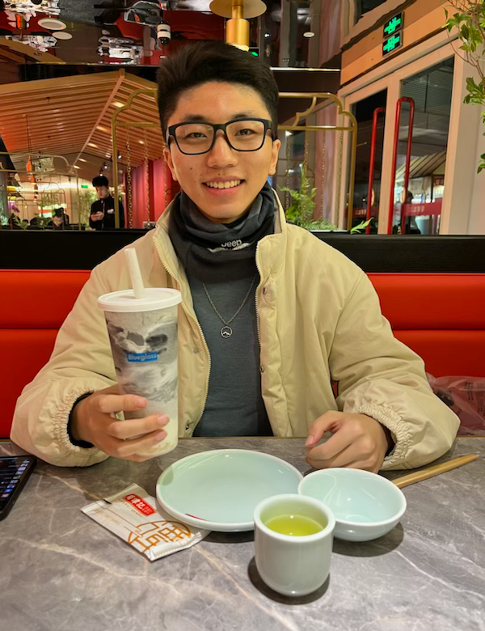

|
Li Zeng (Johnny)
|
 |
Welcome! I am currently a final year master student in the Network Intelligence Center (NICE)
at ShanghaiTech University, Shanghai, China,
where I received my B.Eng. degree in computer science with honor in 2021. I am advised by Prof. Yuanming Shi and (informally) Prof. Dingzhu Wen.
Starting from Fall 2024, I will be pursuing my Ph.D. degree under the supervision of Prof. Khaled B. Letaief in the Department of Electronic and Computer Engineering (ECE), The Hong Kong University of Science and Technology (HKUST), Hong Kong SAR, China.
I am interested in understanding, utilizing and developing elegant theoretical tools as well as provable learning-based methods to direct the design of and optimize the performance of the next generation communication networks.
My particular focus lies in applying graph theory, discrete algorithms, and mathematical optimization for federated edge learning, computing power network and non-terrestrial networks in 5G/6G.
Email: zengli@shanghaitech.edu.cn (Feel free to drop me an email~)
Address: Rm. 309, SIST Building 2, 393 Middle Huaxia Road, Pudong New District, Shanghai 201210, China.
|
News
Publications (By Year)
Y. Shi, L. Zeng, J. Zhu, Y. Zhou, C. Jiang and K. B. Letaief, "Satellite Federated Edge Learning: Architecture Design and Convergence Analysis," submitted to IEEE Trans. Wireless Commun., Dec. 2023.
L. Zeng, D. Wen, G. Zhu, C. You, Q. Chen and Y. Shi, "Federated Learning With Energy Harvesting Devices," IEEE Trans. Green Commun. Netw., Aug. 2023. [Paper]
L. Zeng, D. Wen, G. Zhu, C. You, Q. Chen, and Y. Shi, "Joint Bandwidth Allocation, Computation Control, and Device Scheduling for Federated Learning with Energy Harvesting Devices," in Proc. Asilomar Conf. on Signals, Systems, and Comput., Pacific Grove, CA, USA, Oct. 2022, pp. 1164–1168. [Paper]
|